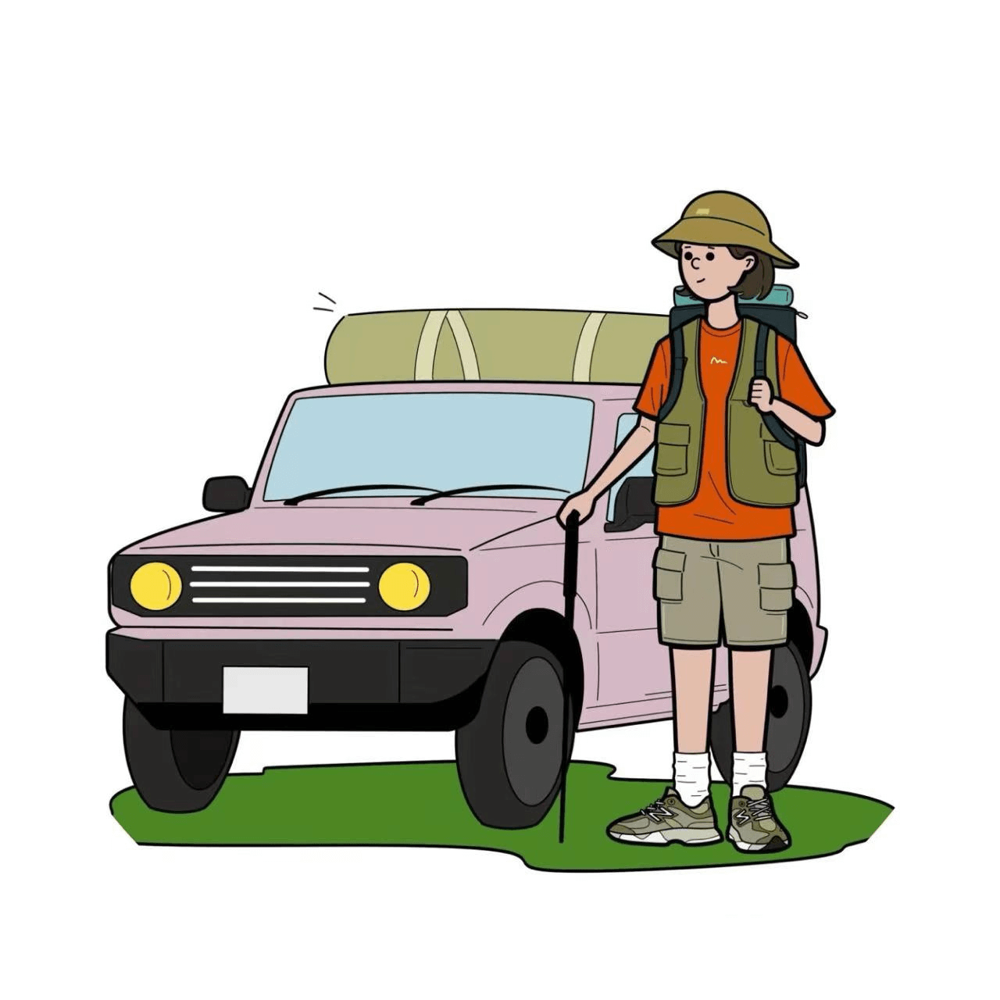

Ride-Hailing
Community
Travel Recommendations

Login/Registration
Contact us
Recommendations
Select
Popular Travel Itineraries
The Classic European Tour
The Asian Adventure
The Grand American Road Trip
The Southeast Asian Circuit
The Mediterranean Cruise
The Australian East Coast Escape
The South American Journey
The Nordic Explorer
The Middle Eastern Treasures
The African Safari Adventure
Destinations Recommendations
London
Paris
Gui Zhou
Gan Nan
Xi Zang
Macau
Bangkok
Auckland
Canberra
Unleash Your Inner Explorer – TripTrekker, Where Every Journey Tells a Story.